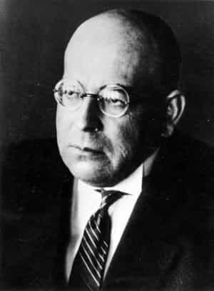

< < < Back
How A German Historian Predicted The Decline Of Western Civilization 100 Years Ago – Return Of Kings
Is Western Civilization in Decline? I think nearly everyone in the manosphere would agree that it is.
There is a lot of discussion these days about America and the other nations comprising Western Civilization being in decline, and there is certainly a lot of evidence to support this claim. Whether it be dying populations among the Caucasian races that created the civilization, unchecked immigration rapidly replacing native populations in Europe and the United States, evidence that America is currently and has been behaving as an imperialistic empire but is now slowly losing its power around the world, a culture that seems to completely disregard the importance of family, the building block of civilization, or a loss of religiousness and sense of purpose, signs that something is wrong are everywhere.
You may be surprised to learn that many of the things that have been happening to Western Civilization were written down in a predictive model of history written by German historian and philosopher Oswald Spengler nearly 100 years ago.

Oswald Spengler, Prophet of Western Decline
That said, Spengler has his critics, as do many misunderstood geniuses. Right or wrong, most of the attacks on his civilization model are made by those who cannot see the forest for the trees. Because of this, his genius work has largely gone unrecognized in modern times. As with many truths, “… in every culture and society there are facts which tend to be suppressed collectively, because of the social and psychological costs of not doing so,” as stated by researcher Peter Dale Scott. A lot of people seem to be turned off by a predictive model of history since the psychological cost of admitting that humans are subject to the same cycles in nature as other animals is quite high.
Whether you agree with his ideas or not, they’re intellectually fascinating, and worth a look. This article only scratches the surface of Spengler’s epic civilization model.
The Four Seasons
Spengler equated the four cycles in human civilizations to the seasons: Spring, Summer, Autumn, and Winter. In compiling his work, he studied the 8 High Cultures thought to have existed: Babylonian, Egyptian, Indian, Chinese, Mayan/Aztec, Greek/Roman or Classical, Arab and, finally, Faustian, or what we call Western civilization. He believed each of the eight civilizations went through phases, just like the seasons. While some of those cultures are still with us, they have not been dominant cultural forces since their Winter. For example, China was referred to as a Sleeping Giant until it picked up on some of the vitality of the West.
In Spengler’s model, each culture goes through a formative Culture Stage, followed by a decadent period known as Civilization. The culture period makes up the “organic” Spring and Summer of a civilization, and is when the civilization is inspired by its own art and religion. Autumn and Winter make up the Civilization phase, in which the society becomes inorganic and is based only on the organization created during the Culture phase. The creativity seen in the Culture period slowly fades away. The civilization stiffens, and becomes overpopulated, metropolitan, and uninspired. For the purpose of this article, we will focus mainly on Western Civilization and its expression of the four seasons.
Roughly speaking, each season makes up about 250 years. This procession of “seasons” happened to all civilizations Spengler studied. Spengler said that by using his civilization model he could make predictions so accurate they would astonish people. Indeed, since 1918 through the present day, his predictions for Faustian/Western Civilization have been spot on.
The full civilization model is available here.
Spengler’s civilization model – as organic as the four seasons
The Culture Phase: Spring and Summer
Spengler wrote Western civilization entered its Pre-Culture stage before 1000 AD. During that time, there is what he calls, “Chaos of primitive expression forms. Mystical symbolism and naive imitation.” As with other civilizations coming into being, in Faustian civilization there is a lot of apocalyptic imagery in this period and a fascination with death. Architecturally, the Romanesque cathedrals constructed around this time mark the beginning of the new Faustian culture form. In literature, collective epics like Beowulf and works such as The Song of Roland are published. Politically, there are “tribes and their chiefs. As yet no Politics and no State.”
Moving into Spring, there is a “powerful cultural creation from awakening souls, unity and [cultural] abundance. Great creations of the newly-awakened dream-heavy soul. Super-personal unity and fullness.” Some of Faustian Civilization’s expressions of this idea were as follows: The Holy Grail romances such as Perceval, the Story of the Grail are written. Architectural style shifts from Romanesque to Gothic Cathedrals. Gregorian Chant evolves as a musical form and we hear polyphony becoming the great Western musical form. (While we are discussing polyphony, an important note is that Spengler considered infinity to be the central, motivating idea behind Faustian/Western civilization. It is expressed in its music as polyphony, in its mathematics as infinitesimal calculus, and finally through Manifest Destiny/boundless exploration conducted by Western civilization which ultimately led it to the ultimate infinity – space.)
Politically, there is the formation of “national groups of definite style and particular world-feeling: ‘nations.’ Working of an immanent state-idea.” This is sub-divided into “The two prime classes (noble and priests). Feudal economics; purely agrarian values,” transitioning into “Actualizing of the matured State-idea. Town versus countryside. Rise of Third Estate (Bourgeoisie). Victory of money over landed property.”
Moving into Summer, we see these developments in the Culture: “Ripening consciousness. Earliest urban and critical stirrings.” In Faustian civilization, the dominant literature shifts from Grail romances to novels such as Don Quixote and Shakespearean plays. Architectural forms once again shift from Gothic Cathedrals to princely palaces and polyphonic musical forms evolve into Baroque, which is the period of the birth of Classical music. In politics we see “conflicts between aristocracy and monarchy. The political center shifts from castles and estates to the cities.”

Political Epochs in Spring and Summer
1. Feudalism. Spirit of countryside and countryman. The “City” only a market or stronghold. Chivalric-religious ideals. Struggles of vassals amongst themselves and against overlord. 900-1500 AD.
2. Crisis and dissolution of patriarchal forms. From feudalism to aristocratic State. 900-1500 AD.
3. Fashioning of a world of States of strict form. 1500-1800 AD.
4. Climax of the State-form (“Absolutism”) Unity of town and country (“State” and “Society.” The “three estates”) 1500-1800 AD.
5. Break-up of the State-form (Revolution and Napoleonism). Victory of the city over the countryside (of the “people” over the privileged, of the intelligentsia over tradition, of money over policy.) 1800-2000 AD.
The Civilization Phase: Autumn and Winter
“The body of the people, now essentially urban in constitution, dissolves into formless mass. Megalopolis and Provinces. The Fourth Estate (“Masses”), inorganic, cosmopolitan.”
We have now entered the Civilization phase as Summer transitions into Autumn. The intellect of the civilization, fully developed, begins to sterilize away the culture’s early organic nature. Spengler calls it, “Intelligence of the City. Peak of strict Intellectual creativeness.” In the West, the Enlightenment occurs during this time. Classical music peaks and then declines as an art form, further marking the shift into the Civilization phase.
The civilization becomes metropolitan, first overpopulating its cities, only to eventually begin dying out once Winter arrives. In Autumn, true art dies out in favor of metropolitan “art for the masses.” Politically, there are “struggles between the aristocracy and the bourgeoisie, Revolutions, and Napoleonism.” The American Revolution occurs during Autumn. Also in autumn we see “urban rise; peak of disciplined organizational strength.” This is the peak of the civilization, which is then followed by a “fissure in the world-urban civilization; exhaustion of mental organization strength; and irreligiousness rising.”
According to Spengler, Western world has entered Winter and its civilization is ending. He describes Winter as the “dawn of Megalopolitan Civilization. Extinction of spiritual creative force. Life itself becomes problematical. Ethical-practical tendencies of an irreligious and unmetaphysical cosmopolitanism.”
Over the coming decades, Spengler expects the intellect of our civilization to fade, people to stop reading and thinking as the civilization as a whole loses interest in thought, and the government to become autocratic/tyrannical. Art will further devolve into “meaningless subjects of fashion.” The population comprising the civilization will continue dying off as it loses touch with the myths and culture it was founded upon. We are also experiencing the “spread of the Final World Sentiment” of our civilization as the spread of Socialism around the world. As government becomes autocratic we can expect “primitive human conditions slowly thrust up into the highly-civilized mode of living.” Our great works and most of our technology will fade and lie in ruins as the population comprising our civilization fades away. First the countryside and then the cities will depopulate (as seen in the Rust Belt and now cities like Detroit.) Spengler says we should also expect conquests of our now-exhausted civilization by “young peoples eager for spoil, or [foreign] conquerors” as the imperial machinery of the State falls apart.
Keep in mind – this was all predicted in 1918 by Spengler even though it sounds as if it was written today!

Political Epochs in Autumn and Winter
1. Domination of Money (“Democracy”). Economic powers permeating the political forms and authorities. 1800-2000 AD.
2. Victory of force-politics over money. Increasing primitiveness of political forms. Inward decline of the nations into a formless population, and constitution thereof as an Imperium of gradually-increasing crudity of despotism. 2000-2200 AD.
3. Private and family policies of individual leaders. The world as spoil. Egypticism, Mandarinism, Byzantinism. Historyless stiffening and enfeeblement even of the imperial machinery, against young peoples eager for spoil, or alien conquerors. Primitive human conditions slowly thrust up into the highly-civilized mode of living. After 2200 AD.
The Future, Echoing Roman Civilization
In the Winter of Roman politics there was a shift from the Roman Republic to Caesarism, or government led by a charismatic strongman. Eventually, the idea of representation broke down and there was a shift to bloody “force politics.”
Of course, our current government is modeled on the Roman system. There are even similarities between the two dominant parties. In Rome, the two dominant parties were the Optimates and Populares, the Republicans and Democrats of their day. This form of representative government eventually stops working because the system of checks and balances interfere with each other, causing gridlock. Force politics (killing people) eventually comes along to break the gridlock. (As an aside, some historians say it’s possible we entered this era in 1963 with the assassination of JFK by the military-industrial complex.) Arguably, this predictive model is spot-on with the current situation in the Western world. So, if Spengler’s model is correct, we are awaiting the rise of a dictator to come along and smash the rotten edifice of democracy sometime this century.

Spengler thought Democracy was the form of government of a civilization in decline
Spengler on Democracy
Spengler did not have a very high opinion of democracy. He believed it was the form of government of a civilization in decline, and interestingly the idea of mass democracy arrived in the Winter of Faustian/Western Civilization. Spengler viewed democracy as a weapon of moneyed interests, who use the media to create the illusion that there is consent from the governed. To him, the notion of democracy is really no different than living under a plutocracy (government by a wealthy elite.) Using the media’s propaganda, money is turned into force and controls people’s lives.
The leftist causes that have dominated the last century, such as equalism, feminism, and Socialism, to Spengler, were only tools used to assist the moneyed powers to be more effective.
The decline is also marked by increasingly authoritarian leaders as the democracy breaks down. Monetary powers permeate the government, eventually destroying it. This is where we currently are on Spengler’s timeline, which leads to what Spengler expects will happen in the West: The rise of a a Caesar as democracy, dominated by money, crumbles under its own corruption. People will cease to participate in elections, and the best candidates will remove themselves from politics. Spengler thinks blood is the only force that can conquer the force of money.
A New Spring After the Winter?
Spengler’s predictions of decline, as prescient as they have been over the last century, may leave you feeling a sense of hopelessness after studying his work. However, as one culture and civilization fades away, it’s very likely another will arise as part of this organic cycle.
John David Gebser later studied Spengler’s work, and believes a new consciousness will emerge from the ashes of the old civilization. Just as Western civilization was built upon the ashes of Ancient Greece and Rome, a new civilization may well be built on the ashes of our own.
The Decline of the West, published in 1918 and largely unknown today, is work that very well could be among the greatest ideas ever conceived by the human mind. It smashes the linear model of history (always moving upward) presented in the public school system, and instead presents the idea that throughout history man and his civilizations go through periods of birth, growth, decline, and death.
 If you like this article and are concerned about the future of the Western world, check out Roosh's book Free Speech Isn't Free. It gives an inside look to how the globalist establishment is attempting to marginalize masculine men with a leftist agenda that promotes censorship, feminism, and sterility. It also shares key knowledge and tools that you can use to defend yourself against social justice attacks. Click here to learn more about the book. Your support will help maintain our operation.
If you like this article and are concerned about the future of the Western world, check out Roosh's book Free Speech Isn't Free. It gives an inside look to how the globalist establishment is attempting to marginalize masculine men with a leftist agenda that promotes censorship, feminism, and sterility. It also shares key knowledge and tools that you can use to defend yourself against social justice attacks. Click here to learn more about the book. Your support will help maintain our operation.
Read More: Why Sex Selfies Signal The Decline Of Western Civilization